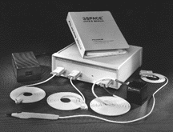
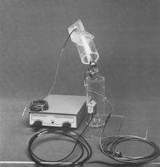

Polhemus 3Space Isotrak
Magnetic 6DOF tracking sensor for 3D interaction.

Overview
The Polhemus 3Space Isotrak, introduced in 1987, was the first widely available electromagnetic six‑degrees‑of‑freedom (6DOF) tracking system for interactive 3D applications. Before the Isotrak, freehand spatial input was largely confined to mechanical linkages or limited camera‑based systems; the Isotrak enabled untethered, fully immersive interaction in virtual reality (VR) and computer‑aided design (CAD). Using low‑frequency magnetic fields, a single compact sensor reported its position and orientation in real time, allowing users to look around virtual scenes, manipulate 3D objects with a stylus, or wear a head tracker for head‑mounted displays. Its introduction marked a pivotal moment in human‑computer interaction, bridging the gap between two‑dimensional interfaces and fully embodied 3D computing.
The system consisted of a stationary magnetic source, a lightweight receiver/sensor, and a microprocessor‑controlled electronics unit that communicated via RS‑232 serial port. It could track within a hemispherical volume of approximately 1.5 m, with an update rate around 30 Hz and latency on the order of 30 ms – sufficient for many research and industrial applications of the era. While later systems offered greater speed, multi‑sensor capability, and higher accuracy, the Isotrak established the electromagnetic approach that remains a cornerstone of motion tracking today.
Commercially, the Isotrak became a standard tool in VR labs worldwide, integrated into systems like VPL Research’s EyePhone head‑mounted display and the Convolvotron 3D audio spatializer. It also found use in biomechanics, robotics, and ergonomic assessment. Through subsequent models (Isotrak II, FASTRAK) and a lineage of modern Polhemus trackers, its legacy endures in motion‑capture studios, flight simulators, and medical training systems that still rely on the non‑line‑of‑sight magnetic tracking principle it pioneered.
Deep dive
Polhemus was founded in 1970 by Bill Polhemus, initially developing magnetic navigation systems for the U.S. Navy. By the early 1980s, the company, then a division of McDonnell Douglas Electronics Company, began adapting its precision tracking technology for civilian uses. The emergence of VR research – notably at NASA Ames and VPL Research – created a demand for responsive, unencumbered 3D input. The 3Space Isotrak, launched in 1987, was the direct response: a self‑contained, affordable (for the time) 6DOF magnetic tracker that could be purchased off‑the‑shelf rather than custom‑built. It brought laboratory‑grade motion tracking into university and commercial labs, laying the groundwork for the rapid prototyping of VR interaction techniques.
The original Isotrak system comprised three units: a magnetic source (a cube emitting three orthogonal low‑frequency magnetic fields), a sensor (a smaller cube with three orthogonal coils), and a desktop electronics unit that performed all calculations. The source, typically placed on a desk or tripod, generated a hemispherical working volume of about 1.5 m in diameter. The sensor, measuring roughly 2.5 cm per side, could be grasped as a stylus or attached to a headband or HMD. Data was transmitted via an RS‑232 serial interface to a host computer. Positional accuracy was advertised in the range of 0.1 inches (2.5 mm) RMS, with angular accuracy around 0.5°. The original update rate depended on the level of filtering; typical installations achieved 30 Hz, while the later Isotrak II raised that to 60 Hz. Because the system used alternating magnetic fields, it did not require line‑of‑sight and was immune to optical occlusion, but it was sensitive to ferromagnetic interference from nearby metal objects and electromagnetic noise, which could distort the tracking field.
The Isotrak transformed how users interacted with 3D digital environments. In VR, a sensor mounted on a head‑mounted display provided low‑latency head tracking, enabling realistic viewpoint changes as the user turned, looked up/down, or tilted their head. In CAD, the sensor was often housed in a handheld stylus, allowing designers to navigate and manipulate virtual prototypes in full 6DOF – zooming, rotating, and panning with natural hand movements that were impossible with a mouse. Researchers also used it for free‑air gestural commands, simple motion capture, and as a spatial input for auditory displays (e.g., the Convolvotron system). The ability to track a single, unconstrained point in space opened up a new design space for interaction, influencing the development of early 3D widgets, the “data glove” concept, and immersive walkthroughs.
The Isotrak was followed in 1990 by the 3Space Isotrak II, which offered greater range (up to 2.5 m), faster update rates (60 Hz), and a more compact electronics unit. In 1993, Polhemus launched the FASTRAK, a multi‑sensor system that could track up to four receivers simultaneously, solidifying the company’s dominance in electromagnetic tracking. The Isotrak family remained on the market for several years, used in aerospace, automotive design, and medical simulation. By the late 1990s, optical tracking systems (e.g., Vicon, OptoTrak) began to compete, and Polhemus shifted its focus to higher‑end medical and military applications. The original Isotrak gradually disappeared, but its technology evolved into the modern Liberty, Patriot, and Viper trackers still sold by Polhemus today.
The Isotrak’s greatest legacy is the democratization of 6DOF spatial input. Before 1987, exploring immersive VR required custom‑built, expensive, and often unreliable trackers. The Isotrak’s relative affordability and plug‑and‑play serial connection let countless university labs and small companies experiment with head‑tracked displays, 3D interaction techniques, and immersive environments. This wave of experimentation directly influenced the graphical user interfaces of 3D modeling software, the design of video game controllers (e.g., Nintendo’s Power Glove used magnetic tracking concepts), and the growing field of HCI research into embodied interaction. Even today, electromagnetic tracking remains the technology of choice in surgical navigation, pilot helmet‑mounted displays, and motion‑capture where optical systems fail due to occlusion. The Polhemus 3Space Isotrak thus stands as a foundational artifact in the history of virtual reality and spatial computing.
Team & pioneers
- Bill Polhemus. Founder and inventor of the electromagnetic tracking technology
- Polhemus (division of McDonnell Douglas Electronics). Developer and manufacturer
Media

